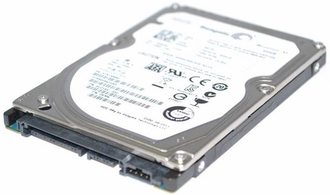

Stockage
Il existe deux options pour le stockage d’un PC gamer, soit un disque dur, soit un SSD. Les disques durs contiennent des plateaux rotatifs et de petites pièces mécaniques qui lisent et écrivent les données. Les disques durs vous offrent généralement plus d’espace de stockage (en Go), mais au fur et à mesure que la technologie flash NAND progresse, la capacité des SSD ne cesse d’évoluer.Les SSD sont composés de cellules électriques qui reçoivent et envoient des données, vous permettant de démarrer votre ordinateur, d’enregistrer et de transférer vos fichiers plus rapidement tout en consommant 90 % d’électricité en moins. L’absence de pièces mobiles rend également les SSD plus durables.
